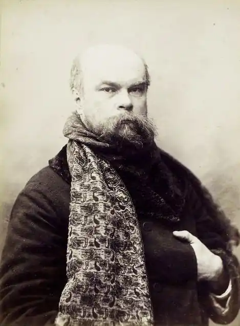

ПОЛЬ ВЕРЛЕН (1844-1896)
Поль Верлен посідає особливе місце серед видатних французьких ліриків кінця XIX століття. Проголошений "принцом поетів" і шанований як визнаний майстер символічного напряму, він, проте, не був ні його лідером, ні теоретиком.
Факти особистої біографії поета та його творчість нерозривно пов'язані. Натура пристрасна й неврівноважена, Верлен часто згинався під тягарем життєвих обставин, заплутувався в суперечностях власної долі й характеру. Але справедливо зауважив А. Франс: "Не можна застосовувати до цього поета те ж мірило, яке застосовують до людей розсудливих. Він має права, яких у нас немає, оскільки він стоїть незрівнянно вище і, разом із тим, незрівнянно нижче за нас. Це несвідома істота, і це такий поет, який зустрічається раз на століття". Поль Марія Верлен народився в 1844 році в містечку Мец. Його батько був військовим інженером, і родина часто переїжджала, доки в 1851 році не залишилася в Парижі, де минули шкільні роки майбутнього поета. У 1862 році він отримує диплом бакалавра словесності. Уже в юнацькі роки у Верлена з'являється схильність до літературної творчості. Він зачитується віршами Ш. Бодлера, поетів — "парнасців" Т. де Банвіля і Т. Готьє. Восени 1862 року Верлен записується на факультет права — вивчати юриспруденцію, та незабаром через матеріальні нестатки полишає навчання і стає до роботи. У 1866 році Верлен публікує свої вірші в журналі "Сучасний Парнас" і видає власним коштом збірку "Сатурнічні поеми" У першій збірці поета ще відчутний вплив естетики поетів-"парнасців". "Парнасці" відмовлялися від романтичного "кипіння почуттів", від "сповідальної лірики". Основним критерієм прекрасного, на їх думку, мала бути досконалість форми, "рівновага між об'єктивним і суб'єктивним", і цей принцип почасти зберігається в поетичних образах молодого Верлена. Однак вірші "Сатурнічних поем" вже мають ознаки оригінального верленівського стилю: меланхолійність інтонації, здатність передавати таємні порухи душі, її "музику". Збірка присвячена тим, хто народився "під знаком Сатурна", усім, "хто нещасливий на землі, кого тривожить бентежна уява, хто приречений на земні, а можливо, і на віковічні страждання". Саме таким бачив поет себе й свого читача, сподіваючись на його співчуття. Поет захоплено говорить про твори та предмети мистецтва, часто вживає слова прекрасне, ідеал, безпристрасний, байдужий. Але в його сприйнятті світ не є холодно-гармонійним і прекрасно-байдужим, яким він поставав у "парнасців". Створені Верленом пейзажі здебільшого зображують осінь, захід сонця, сутінки ("Осіння пісня", "Сонце на спаді", "Never more"). Ліричний герой цих віршів статичний, у його застиглості відчутне щось фатальне. Наприкінці 60-х років Верден співробітничає в літературних журналах; у 1869 році видає власним коштом збірку під назвою "Вишукані свята". Відправним пунктом для створення збірки прислужилися поетові книга братів Гонкурів про мистецтво XVIII століття, окремі вірші В. Гюго і Т. де Банвіля, а також відкриття залів Лувру, присвячених цій "галантній" епосі. У збірці "Вишукані свята" Верлен використав характерний для "парнасців" прийом створення пейзажу: не враження від живої природа, а її відображення в живописі надихають поетичні рядки. Поета захоплюють картини Ватто, Фрагонара, Греза, проте, замальовки природи набувають суто верленівського характеру "пейзажу душі", вони підпорядковані тут основному художньому завданню — виявити відтінки стану душі ліричного героя. Дами й кавалери, які з'являються в книзі, не живуть у реальному світі, а існують як гра уяви, як примхлива вистава на тлі витонченого "пейзажу душі": "Твоя душа — витворний краєвид, / Яким проходять з піснею і грою / Чарівні маски, радісні на вид,/ Та сповнені таємною журою". Вірші "Вишуканих свят" написані в новій, абсолютно відмінній від "парнаської", меланхолійно-грайливій формі, яка допускає розмовну інтонацію. Поет бавиться новими, неможливими в традиційному віршуванні римами. Збірка "Вишукані свята" дала поштовх подальшим творчим шуканням самого Верлена і А. Рембо. Любовна пристрасть до Матильди Моте, чарівної шістнадцятилітньої дівчини навіяла Верлену вірші, зібрані в третій книзі "Добра пісня" (1870). Це розповідь про палке й водночас несміливе кохання до дівчини, яка полонила поета чистотою і жіночою чарівністю. Віршам, які увійшли до збірки, притаманна спільна мелодія. Голос поета стає ніжним, ліричним. Він пише про очікування, про нетерпіння, з яким "чекає союзу двох сердець", про скромну принадність своєї нареченої, про пробудження в душі високих почуттів. У цілому збірка знаменує перехід від "епічного" до особистого, повсякденного, до вражень "цієї миті". Проникливе засвоєння подробиць буття, звичайних, щоденних речей, які Верлен перетворює на деталі істинно поетичного світу, на "пейзаж душі",— все це, як і характерна природність вірша, стає ознакою "імпресіоністичної поезії". Збірку "Добра пісня" було видрукувано влітку г870 року, напередодні франко-прусської війни. Саме тоді відбулося й весілля Верлена та Матильди. Молодята оселилися в Парижі, і незабаром їм довелося пережити облогу столиці прусськими військами. Після 1871 року верленівска меланхолія поглиблюється. У цьому відіграють свою роль і поразка Паризької Комуни, і особисте життя, що не склалося. Родинні відносини перетворюються на справжню драму після знайомства поета з Артюром Рембо. Суцільний нігілізм і анархізм цього юного генія підштовхують Верлена до більш рішучого розриву з поетичною традицією. Із січня 1872 року Верлен повсякчас перебуває із Рембо, який глибоко вплинув на нього своєю думкою про необхідність пошуку нових шляхів поетичної творчості. Поети вирушають у мандри до Бельгії, до Англії, знову повертаються до Бельгії. Між ними відбувається кілька суперечок і примирень, аж поки в липні 1873 року не вибухає кульмінаційна сварка. Верлен стріляє в Рембо з револьвера й легко ранить його в руку, за що його заарештовують, а згодом засуджують до двох років ув'язнення. На волю поет вийде тільки в січні 1875 року, тому першим виданням "Романсів без слів" (1874) він керує з в'язниці. "Романси без слів" — найвище поетичне досягнення Верлена. Знову, як і в перших збірках, звучать ноти суму й меланхолії, нетривалого забуття і печалі. Окремі вірші збірки нагадують пейзажі художників-імпресіоністів, часом у них усе ніби вкрите сірою пімлою або розчинене в тумані. При цьому чітко виявляється притаманна поезії межі століть тенденція до синтезу словесних і живописних образів, використання образотворчих художніх можливостей мови. Прислухаючись до монотонного шуму дощу, до відлуння церковних дзвонів, блукаючи насиченими осіннім повітрям вулицями, занурюючись у бузково-зелену тінь дерев, поет зливається душею з печальним і таємничим світом. Навколишні предмети не існують для нього окремо від світла, яке вони випромінюють, від вібрації повітря: "-Зеленаво й малиново/ У непевнім світлі лампи /За вікном все знову й знову/ Мерехтять пригарки й рампи...". "Романси без слів", імпресіоністичні за своєю природою, складаються переважно з віршів, які змальовують пейзажі. Інші сюжети (історичні, героїчні, сатиричні) безслідно зникають. Але пейзаж тут незвичайний — це знов-таки "пейзаж душі". Природа й душа поета зливаються в одному образі, в єдиній істоті, яка, залишаючись природою, стає водночас людиною. "Миттєвість" вражень підкреслена тим, що Верден із усіх часів дієслова віддає перевагу теперішньому, а самі дієслова в нього поступаються місцем іменникам. Разом із дієсловом-присудком із поетичної фрази зникає дія. Верлен спробував довірити спілкування душі та природи барвам і звукам. Сама назва збірки "Романси без слів" свідчить також про прагнення поета підсилити музичну забарвленість віршів: "Мжиці зажурені звуки / і на землі, й по дахах! / В серці, що в'яне від скуки, /ллються зажурені звуки". Поезія Верлена вперше у Франції покладається на сугестивну силу лірики: поетичне слово в його віршах впливає не стільки завдяки своєму предметному значенню, скільки завдяки "смисловому ореолу", який навіює, підказує ті чи інші настрої. Саме через це поети-символісти вважали Верлена своїм попередником. По виході з в'язниці у світосприйнятті поета відбувся справжній переворот — він навернувся в католицтво. Наступна книга Верлена "Мудрість" (1881) явила світові нову властивість його поезії — релігійне натхнення. Релігійне обернення, бурхливе й пристрасне, було, як це притаманно Верлену, суперечливим і непослідовним, разом із тим, "Мудрість" — книга глибоко продумана. Поет, відрікаючись від свого розпусного минулого з Рембо, розраховував знайти "підкріплення" у вірі, за її допомогою розв'язати конфлікт між "життям" і "мистецтвом". У 1875-1877 роках поет живе переважно в Англії, багато працює. "Поетичне мистецтво" У 1882 році Верлен публікує вірш "Поетичне мистецтво". Вірш ніби подає теоретичне обґрунтування тих особливостей поезії Верлена, які намітилися в "Сатурналіях" та "Вишуканих святах" і повністю втілилися в "Добрій пісні" й особливо в "Романсах без слів". У "Поетичному мистецтві" в наспівних, ритмічно витончених віршах, які своєю якістю повинні були показати можливості нової поетики, Верлен протиставляє музичність вірша визначеності його смислу, закликає до максимального нюансування зображення і демонстрації відтінків. Замість барв певних тонів суттєвими виявляються переходи, напівтони. Саме звідси гасло "Музика перш за все" — адже музика знищує чіткість граней у зображуваному. Верлен закликає позбавитися у віршах розуму й дотепності, сміху й красномовства, оголошує війну римі як пустому брязкальцю. Вірш за Верленом, цінний лише своєю безпосередністю, за умови, однак, що він прагне "до небес інших". Він повинен бути, як "пісня захмелена", оскільки в ній до чіткого обов'язково домішується хистке: "Найперше — музика у слові! / Бери ж із розмірів такий,/ Що плине, млистий і легкий,/ А не тяжить, немов закови". Правила традиційного французького олександрійського (силабічного) віршування вимагали певної кількості складів у рядку та наявності рим, мова мала "підкорятися" розміру.